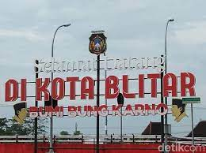
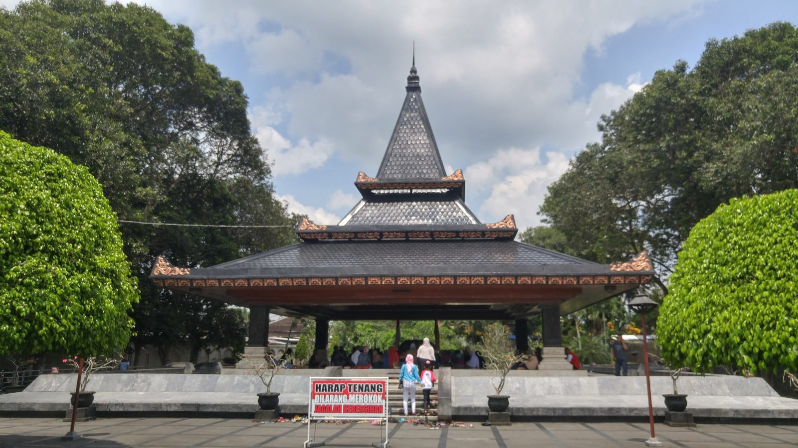

Kota Blitar
Berdasarkan legenda, dahulu bangsa Tartar dari Asia Timur sempat menguasai daerah Blitar yang kala itu belum bernama Blitar. Majapahit saat itu merasa perlu untuk merebutnya. Kerajaan adidaya tersebut kemudian mengutus Nilasuwarna untuk memukul mundur bangsa Tartar. Keberuntungan berpihak pada Nilasuwarna, ia dapat mengusir bangsa dari Mongolia itu. Atas jasanya, ia dianugerahi gelar sebagai Adipati Aryo Blitar I untuk kemudian memimpin daerah yang berhasil direbutnya tersebut. Ia menamakan tanah yang berhasil ia bebaskan dengan nama Balitar yang berarti kembali pulangnya bangsa Tartar. Akan tetapi, pada perkembangannya terjadi konflik antara Aryo Blitar I dengan Ki Sengguruh Kinareja yang tak lain adalah patihnya sendiri. Konflik ini terjadi karena Sengguruh ingin mempersunting Dewi Rayung Wulan, istri Aryo Blitar I.
makam bungkarno
Makam Soekarno atau biasa disebut Makam Bung Karno disingkat MBK adalah kompleks pemakaman presiden pertama Republik Indonesia, Soekarno, yang didesain dengan arsitektur khas Jawa, yaitu bangunan joglo. Kompleks tersebut terletak di Bendogerit, Sananwetan, Blitar, dan dibangun di akhir 1970-an.